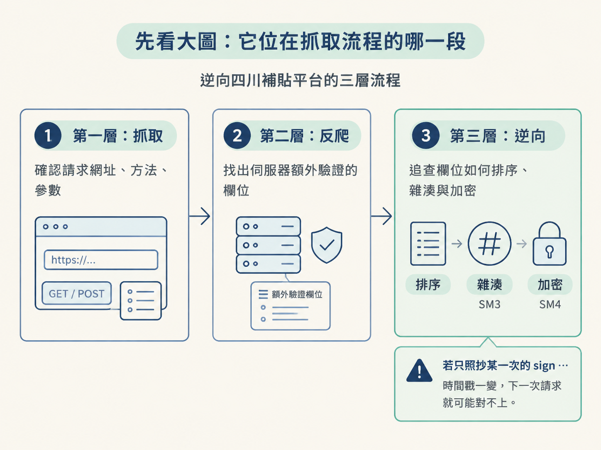
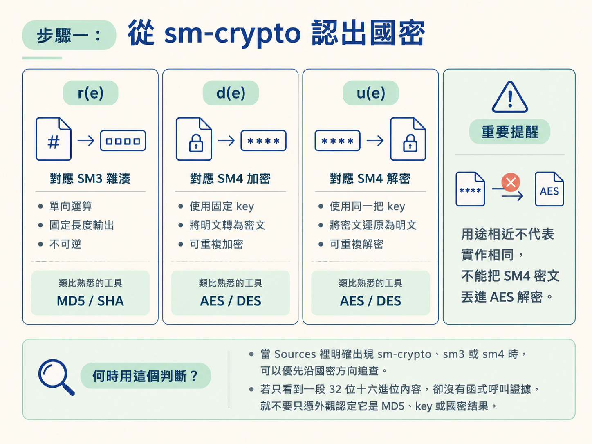
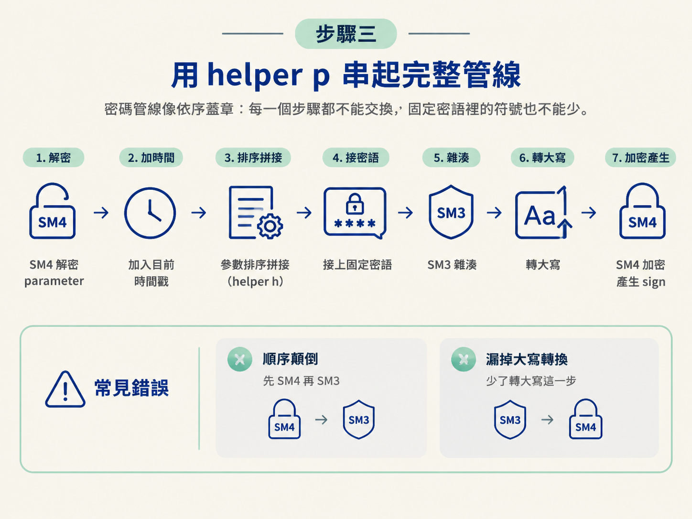
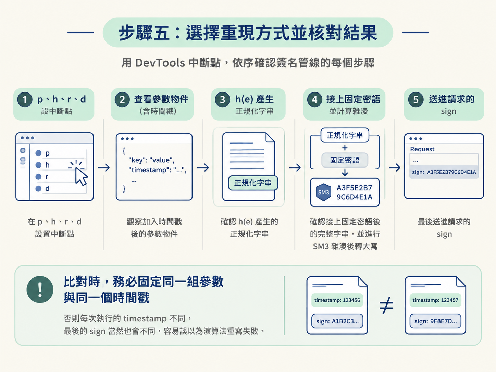

當請求被伺服器擋下來，問題不一定出在 Cookie 或請求標頭。有時候，真正的門票藏在 sign、timestamp 與加密過的 parameter 裡。
這一節要跟著四川農機補貼平台的程式碼，從 sm-crypto 的呼叫一路追到最後送出的簽名。完成後，你應該能讀懂這條處理管線：
參數排序拼接 → 加入固定密語 → SM3 雜湊 → 轉成大寫 → SM4 加密
開始前，你需要先找到產生請求參數的 JavaScript。操作時可以在 DevTools 的 Sources 全域搜尋 sm-crypto、sm3、sm4.encrypt、sign 或 parameter，再沿著函式呼叫往回追。
整體工作可以分成三層。第一層是抓取：確認請求網址、方法與參數。第二層是反爬：找出伺服器額外驗證的欄位。第三層才是逆向：追查這些欄位如何排序、雜湊與加密。
這個案例的重點在第三層。網站不是單純把 JSON 送出去，而是先整理參數，再使用 SM3 與 SM4 產生伺服器預期的內容。若只照抄 Network 面板裡某一次的 sign，時間戳一變，下一次請求就可能對不上。

在案例的 JavaScript 裡，可以看到 sm-crypto，以及包裝過的 sm3、sm4.encrypt、sm4.decrypt。先不要急著重寫，第一步是替這些小函式貼上用途標籤。
// const { sm3, sm4 } = require('sm-crypto');
const sm = require('sm-crypto');
function r(e) {
var t = sm.sm3(e);
return t
}
function d(e) {
var t = sm.sm4.encrypt(e, "30062AFC48C0E7B5B0918851C0445A37");
return t
}
function u(e) {
var t = sm.sm4.decrypt(e, "30062AFC48C0E7B5B0918851C0445A37");
return t
}逐個對照後，三個 helper 的角色就很清楚：
| 案例中的函式 | 實際操作 | 用途 |
|---|---|---|
r(e) | sm.sm3(e) | 產生單向、固定長度的雜湊結果 |
d(e) | sm.sm4.encrypt(e, key) | 使用固定 key 加密 |
u(e) | sm.sm4.decrypt(e, key) | 使用同一把 key 解密 |
可以把 SM3 類比成 MD5／SHA 這類雜湊，把 SM4 類比成 AES／DES 這類對稱分組密碼。不過，「用途相近」不代表實作相同，不能把 SM4 密文直接丟進 AES 解密。
這裡的 SM4 key 是 30062AFC48C0E7B5B0918851C0445A37。它由 32 個十六進位字元組成，換算為 128 位元，符合 SM4 的標準密鑰長度。案例中的加密與解密都使用這把 key；SM3 本身則是雜湊，不使用這把 key。
另外要留意，這段 sm4.encrypt 沒有另外傳入 IV。案例採用的是預設 ECB 模式，因此不能照搬常見的 AES-CBC 寫法。回傳內容也要確認是十六進位還是 Base64，不能只看它是一串文字就直接下結論。
什麼時候用這個判斷？ 當 Sources 裡明確出現 sm-crypto、sm3 或 sm4 時，可以優先沿國密方向追查。若只看到一段 32 位十六進位內容，卻沒有函式呼叫證據，就不要只憑外觀認定它是 MD5、key 或國密結果。

雜湊與加密之前，程式先把 JSON 參數整理成固定格式。這一步像是先把散落桌面的文件排好順序；內容即使完全相同，排列方式不同，最後算出的雜湊也會不同。
負責整理參數的是 h：
function h(e) {
var t = JSON.parse(e)
, n = Object.keys(t).sort()
, i = n.map((function (e) {
var n = t[e];
if (n) {
var i = ""
, c = encodeURIComponent(e);
return i = "object" === typeof (n) ? JSON.stringify(n) : n,
"".concat(c, "=").concat(i)
}
}
));
i = i.filter((function (e) {
return void 0 !== e && null !== e && "" !== e
}
));
var c = i.join("&");
return c
}這段程式可以依執行順序拆成五個動作：
JSON.parse(e) 把傳入的 JSON 字串還原成物件。Object.keys(t).sort() 取出所有鍵，並依字母順序排列。這能讓同一組參數穩定地拼成相同順序。map 把每個項目組成 k=v。鍵會經過 encodeURIComponent；若值是物件，則先使用 JSON.stringify 轉成字串。filter 移除沒有產生內容的項目，包括 undefined、null 與空字串。join("&") 使用 & 串起所有項目，得到後續要拿去簽名的正規化字串。重現時不能只模仿「看起來像查詢字串」的外觀。鍵的排序、鍵的編碼方式、物件值的序列化，以及哪些值會被排除，都必須跟原始 JavaScript 一致。任何一處不同，最後的 sign 都會整串改變。
什麼時候適合照搬 h？ 當你重現的是同一個網站、同一條請求管線時，可以直接沿用。若換了 API，就必須重新查看它是否採用相同的排序、濾值與編碼規則，不能把這個 helper 當成所有網站通用的簽名公式。
確認 r、d、u 與 h 的角色後，再進入真正組裝請求欄位的 p。這裡有兩條分支，但兩條路最後會匯流到同一套簽名步驟。
function p(e) {
var t, n = Date.now();
return e ? (e = JSON.parse(u(e.parameter)),
e.timestamp = n,
e = JSON.stringify(e),
t = h(e),
t += "&key=HD7232D2AAAKA@978D8723H211?IER&6",
{
sign: d(r(t).toLocaleUpperCase()),
timestamp: d(n.toString()),
source: "ZRCSL7V0JIRK1PHY"
}) : (e = e || {},
e.timestamp = n,
e = JSON.stringify(e),
t = h(e),
t += "&key=HD7232D2AAAKA@978D8723H211?IER&6",
{
sign: d(r(t).toLocaleUpperCase()),
timestamp: d(n.toString()),
source: "ZRCSL7V0JIRK1PHY"
})
}照著程式執行，可以分成以下步驟：
Date.now() 取得目前的毫秒時間戳，存入 n。e，就取出 e.parameter，使用 u 做 SM4 解密，再以 JSON.parse 還原成物件。e，則以空物件繼續處理。timestamp。JSON.stringify 轉回字串，再交給 h 排序、編碼、濾空與拼接。&key=HD7232D2AAAKA@978D8723H211?IER&6。r 做 SM3 雜湊，再呼叫 toLocaleUpperCase() 轉成大寫。d 做 SM4 加密，產生 sign。timestamp。整條線可以濃縮成：
若有加密的 parameter，先用 SM4 解密回 JSON → 加入目前時間 → 將參數排序並拼接 → 接上固定密語 → SM3 雜湊 → 轉大寫 → SM4 加密
最後回傳的三個欄位，各有不同角色：
sign：由「正規化參數字串＋固定密語」經過 SM3、大寫轉換與 SM4 加密後產生。timestamp：目前毫秒時間戳的 SM4 加密結果。原始時間也已加入簽名輸入，因此時間改變時，sign 也會跟著改變。source：固定常量 ZRCSL7V0JIRK1PHY，不是動態計算出來的。這裡最容易犯的錯，是把順序寫成「SM4 加密後再做 SM3」，或漏掉大寫轉換。密碼管線就像依序蓋章：每一個步驟都不能交換，固定密語裡的符號也不能少。

案例中的 aaa() 示範函式還會把參數物件本身用 SM4 加密，產生 parameter，再回傳 {parameter, h}。因此這個請求同時包含兩種處理：
parameter 負責承載加密後的請求內容。sign 則依照前面的固定管線產生，供伺服器驗證。實作時要分清楚「加密請求內容」與「計算簽名」是兩件事。不要因為兩者都呼叫 SM4，就把它們混成同一個欄位，也不要拿 Network 面板裡的 parameter 直接當成雜湊輸入。
完成逆向後，可以用兩條路重現。
| 做法 | 適合時機 | 取捨 |
|---|---|---|
保留原始 JavaScript，以 Node 與 sm-crypto 執行，再由 Python 的 execjs 呼叫 | 第一次驗證流程，或希望先快速跑通案例 | 較少重寫落差，但執行環境需要能載入原本的 JavaScript 相依套件 |
| 使用支援國密的 Python 套件重寫 | 已確認每一步輸入輸出，希望把流程整合進 Python | 較容易維護，但排序、編碼、SM3、大小寫與 SM4 設定都必須精確對齊 |
第一次處理這類案例時，較穩妥的順序是先用 execjs 跑通原始邏輯。確認同一組參數能得到與網站相同的 sign 後，再考慮改寫成 Python。這樣若結果不同，就能先判斷是流程理解錯誤，還是重寫時的格式細節沒有對齊。
若要在 DevTools 裡核對，可以在 p、h、r 與 d 設中斷點，依序觀察：
h(e) 產生的正規化字串。sign。比對時要固定同一組參數與同一個時間戳。否則每次執行的 timestamp 不同，最後的 sign 當然也會不同，容易誤以為演算法重寫失敗。

驗收標準不是「成功呼叫了 SM3 和 SM4」，而是同一組參數、同一個時間戳經過你的實作後，能得到與網站相同的 sign。你也應該能指出每個 helper 的工作：
h：把參數整理成固定格式。r：執行 SM3 雜湊。d：執行 SM4 加密。u：執行 SM4 解密。p：加入時間戳，串起正規化、固定密語、SM3、大寫轉換與 SM4。這個案例的關鍵不是背下「國密」兩個字，而是沿著資料流逐步對答案：先找輸入，接著確認排序與拼接，再核對 SM3 的輸出，最後檢查 SM4 的模式、key 與輸出格式。只要每一站都能和 DevTools 裡的值對上，整條簽名管線就不再是黑盒子。
到這裡，你已經看過對稱加密 AES／DES、非對稱加密 RSA，以及國密 SM3／SM4。之後遇到加密請求時，可以先從 Network 確認異常欄位，再回到 Sources 搜尋演算法與呼叫鏈，最後選擇直接執行原始 JavaScript，或在 Python 中逐步重現。